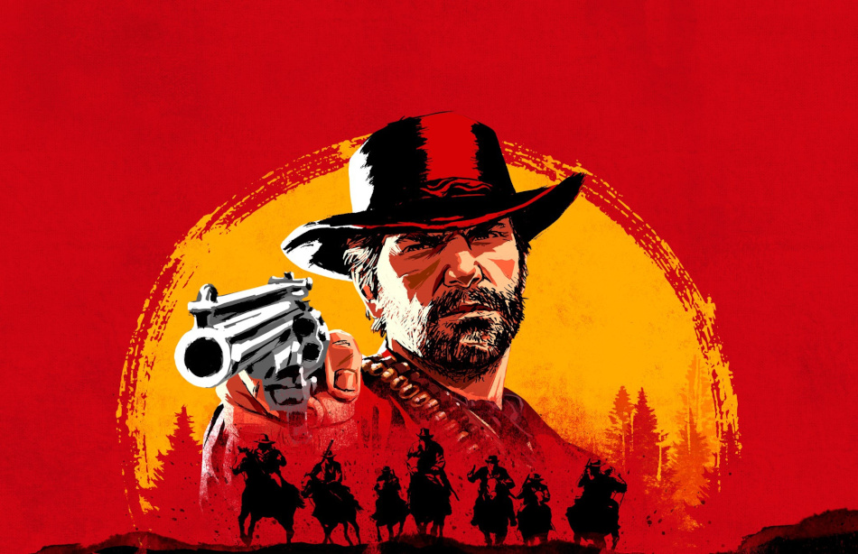

Meu Jogo Incrível - Guia Rápido 🎮

Bem-vindo ao guia rápido para dominar os segredos de "Meu Jogo Incrível"! Prepare-se para a aventura ©2025.
Comandos Essenciais de Movimentação
- Mover para Cima: tecla /Console:
- Mover para Baixo: tecla /Console:
- Mover para Esquerda:tecla /Console:
- Mover para Direita:ecla /Console:
- Pular / Confirmar:tecla /Console: (X)
- Ação Secundária / Cancelar: tecla /Console: (Bola/Circulo)
- Menu / Opções:tecla /Console: (Triângulo)
- Inventário:tecla /Console: (Quadrado)
Sequência de Ataque Especial (Combo "Fúria Pixelada")
- Pressione , (duas vezes rapidamente)
- II. Em seguida, pressione com precisão
- Finalize segurando e apertando
Glossário de Itens do Jogo
Cristal de Energia 💎
Restaura 100 pontos de energia da sua nave. Use com sabedoria!
Escudo Defletor Mk.II 🛡
Oferece proteção temporária contra todos os tipos de dano. Dura 30 segundos.
XP Doubler ✨
Dobra a quantidade de Pontos de Experiência ganhos por 5 minutos.